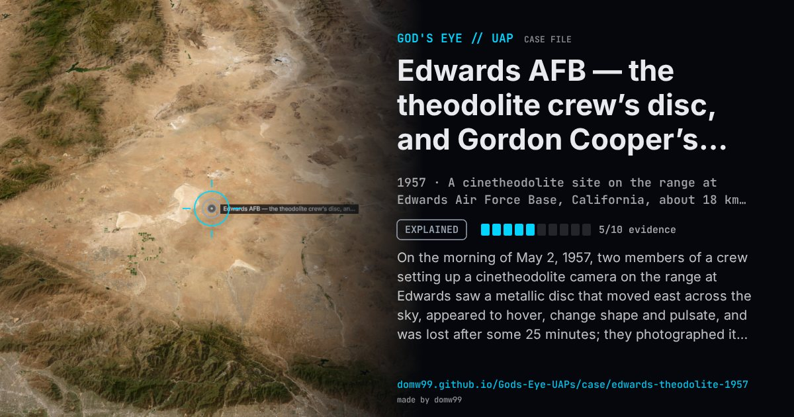

Edwards AFB — the theodolite crew’s disc, and Gordon Cooper’s retelling

On the morning of May 2, 1957, two members of a crew setting up a cinetheodolite camera on the range at Edwards saw a metallic disc that moved east across the sky, appeared to hover, change shape and pulsate, and was lost after some 25 minutes; they photographed it through the theodolite. The report, the questionnaire and the film went to Project Blue Book, whose analysts found that the Edwards weather station, almost due west of the crew, had released a rawinsonde balloon at 07:40 into winds blowing due east, and that its tracked bearings matched the observers’. Decades later Gordon Cooper, then a test pilot and project manager at Edwards, told the story in interviews and in his memoir Leap of Faith: a saucer had landed near the crew on three legs and taken off, he had seen the negatives, and they were sent to Washington and never heard of again. The Blue Book file shows where the film went and what was concluded.
Explanation
Project Blue Book matched it to a rawinsonde weather balloon released by the Edwards weather station at 07:40 and tracked due east until 08:20: its official bearings at 07:50, 08:00 and 08:10 fit the observers’ bearings, and on the theodolite frames the object is barely wider than the cross hairs, about the size of the balloon at that range. The weather officer at Edwards called it “obviously this balloon”. Cooper’s later account (a saucer landing on three legs 50 yards from the crew) does not match what the crew put in their own questionnaire in 1957.
What was seen
Shape: An aluminium or metallic disc that seemed to change shape and pulsate
Witnesses: Two camera specialists on a theodolite crew (named by Cooper as James Bittick and Jack Gettys); their superior, Captain Gordon Cooper, later an astronaut
Duration: About 25 minutes, 07:55 to 08:20
Sources
- Project Blue Book file — Edwards AFB, California, 2 May 1957 (with the balloon analysis) (Internet Archive)
- Wikipedia — Gordon Cooper (UFO sightings)
Browse
- United States
- 1950s
- Explained
- Photo and video cases
- Official government documents
- Military witnesses
- Motion-picture film
- Discs and saucers